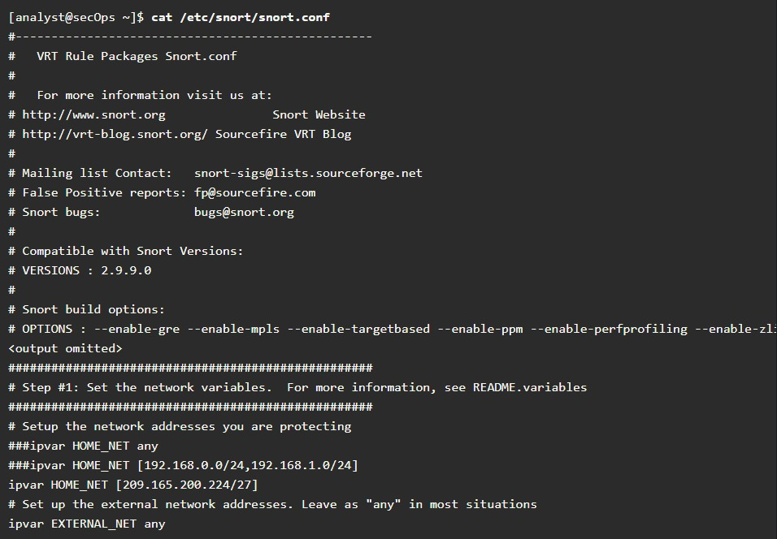

En Linux, los servicios se administran por medio de archivos de configuración. Las opciones frecuentes en la configuración de archivos son números de puertos, localización de los recursos alojados y detalles de autorización del cliente. Cuando el servicio se inicia, busca sus archivos de configuración, los carga en la memoria y se ajusta conforme a la configuración presente en los archivos. A menudo, las modificaciones del archivo de configuración requieren el reinicio del servicio antes de que los cambios surtan efecto.
Debido a que los servicios suelen requerir privilegios de superusuario para ejecutarse, los archivos de configuración del servicio suelen requerir privilegios de superusuario para editar.
La salida del comando muestra una porción del archivo de configuración para Nginx, el cual es un servidor web ligero para Linux.
La salida del siguiente comando muestra los archivos de configuración del protocolo de tiempo de red (Network Time Protocol, NTP).
la última salida del comando muestra los archivos de configuración de Snort, un sistema de detección de intrusiones (Intrusion detection system, IDS) con base en Linux.
No existe ninguna regla de formato para el archivo de configuración; es decisión del desarrollador del servicio. Sin embargo, el formato option = value se usa a menudo. por ejemplo, en la última salida del comando, la variable ipvar es configurada con varias opciones. La primera opción, HOME_NET, tiene el valor de 209.165.200.224/27. El carácter hash (#) se utiliza para indicar los comentarios.
El fortalecimiento de dispositivos consiste en implementar métodos probados para proteger el dispositivo y su acceso administrativo. Algunos de estos métodos implican mantenimiento de contraseñas, la configuración de características de inicio de sesión remoto mejorado y la implementación de seguridad al iniciar sesión por medio de SSH. Definir funciones administrativas en términos de acceso es otro aspecto importante para proteger los dispositivos de la infraestructura, ya que no todo el personal de tecnología de la información debe tener el mismo nivel de acceso a los dispositivos de la infraestructura.
De acuerdo con la distribución de Linux, muchos servicios están habilitados de manera predeterminada. Algunas de estas características se habilitaron por motivos históricos pero ya no son necesarias. Detener estos servicios y garantizar que no se inicien automáticamente al momento del arranque constituye otra técnica de fortalecimiento de dispositivos.
Las actualizaciones del sistema operativo también son fundamentales para mantener un dispositivo fortalecido. Todos los días se detectan nuevas vulnerabilidades. Los desarrolladores de sistemas operativos crean y publican correcciones y parches con frecuencia. Una computadora actualizada corre un riesgo menor de verse afectada.
La siguientes son las mejores practicas básicas para fortalecer un dispositivo.
Existen muchas otras medidas que suelen depender del servicio o las aplicaciones.
Los archivos de registro son los datos que almacena una computadora para llevar un registro de eventos importantes. Todos los eventos del Kernel, los servicios y las aplicaciones se registran en los archivos de registro. Es muy importante que un administrador revise periódicamente los registros de una computadora para mantenerla libre de problemas. Mediante el monitoreo de archivos de registro de Linux, un administrador obtiene un panorama claro del desempeño de la computadora, el estado de la seguridad y cualquier problema subyacente. El análisis de archivos de registro le permite a un administrador protegerse contra futuros problemas antes de que ocurran.
En Linux, los archivos de registro pueden clasificarse del siguiente modo:
Algunos registros contienen información acerca de daemons que se están ejecutando en el sistema Linux. Un daemon es un proceso en segundo plano que se ejecuta sin necesidad de interactuar con el usuario. Por ejemplo, el daemon de Servicios de Seguridad del Sistema (SSSD) gestiona autenticación para capacidades de inicio de sesión únicas y acceso remoto.
La tabla enlista algunos archivos de registro de Linux populares y sus funciones
| Archivo de registro de Linux | Descripción |
|---|---|
| /var/log/messages |
|
| /var/log/auth.log |
|
| /var/log/secure |
|
| /var/log/boot.log |
|
| /var/log/dmesg |
|
| /var/log/kern.log | |
| /var/log/cron |
|
| /var/log/mysqld.log o /var/log/mysql.log |
|
El resultado del comando muestra una parte del archivo de registro /var/log/messages. Cada línea representa un evento registrado. Las marcas de hora en el comienzo de las líneas marcan el momento en que ocurrió el evento.
En esta práctica de laboratorio se familiarizarán con los pasos para ubicar y manipular archivos de registro de Linux.